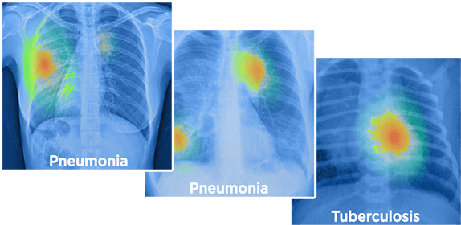
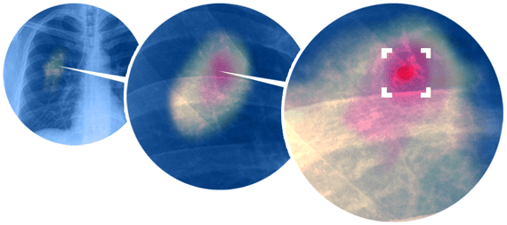
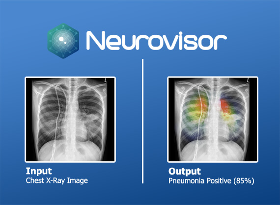
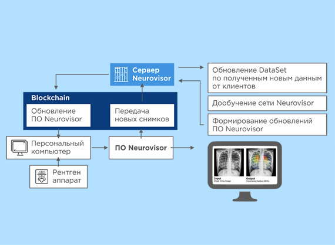

В настоящий момент Neurovisor распознает признаки туберкулёза и пневмонии, выявляя их в результате анализа флюорографии.
Мощная вычислительная сеть
В основе системы лежит обучаемая нейронная сеть.
Её эффективность и быстрота обучения обеспечена вычислительной мощностью до 7 терафлопс, что соответствует 34 месту в мировом рейтинге суперкомпьютеров Тоp 500
обучение нейронной сети
Первая версия системы обучена на 10 000 флюорографических снимков.

описание системы
В основе первой версии системы лежит:
система искусственного интеллекта, содержащая сегментирующуюнейронную сеть;
графический пользовательский интерфейс;
технология blockchain для обеспечения необходимой мощности вычислений.
Мощность системы составляет до 7 терафлопс, что эквивалентно 3000 современных офисных компьютеров.
данные для обучения
Для обучения нейросети по признакам туберкулеза и пневмонии использовались открытые дата сеты:
National Institutes of Health Chest X-Ray Dataset (США)
China Set - The Shenzhen set - Chest X-ray Database (Китай)
Закрытые данные из:
Уральского НИИ Фтизиопульмонологии
Тщательное сканирование
Neurovisor обратит внимание на очаги характерные заболеванию пневмонией или туберкулезом, поможет принять решение в нетривиальной ситуации.

Порядок работы
Загрузив флюорографический снимок в электронном виде в Neurovisor, пользователь получает в ответ распознанную информацию. На снимке выделяется область, где выявлены вероятные признаки заболевания.
Обнаружены признаки заболевания.
Признаков заболеваний нет.

Построение работы Neurovisor

Преимущества Neurovisor
Время: ускоряет процесс обработки медицинских данных пациентов.
Экспертиза: помогает специалистам в определении очагов заболевания туберкулезом и пневмонией.
Уменьшение человеческих ошибок: система дополняет работу медицинского специалиста, помогая привлечь внимание к возможным признакам заболевания.
Оценка: помогает проверять эффективность рентгенологов, пульмонологов.
Доступность: при отсутствии специалистов высокой квалификации в отдаленных районах и областях страны, система поможет расшифровать результат и выдать предварительный анализ любому врачу.
Обучение: использование нейросети позволяет существлять дообучениеискусственного интеллекта, постоянно увеличивая этим точность диагнозов.
Масштабируемость: система может быть использована как частным специалистом, так и сетью клиник.
Информационная интеграция: система выпускается в коробочной версии, устанавливаемой на компьютер или сервер пользователя. Система не зависит от качества связи и не создает проблем с обеспечением безопасности внутренних сетей.
Обновляемость: с постоянным самосовершенствованием
Проектируемая конфиденциальность
Cистема Neurovisor построена на основе принципа privacy by design (проектируемая конфиденциальность). Конфиденциальность является стандартной установкой системы. Neurovisor обучается и использует обезличенные дата-сеты, а также обеспечивает полную сохранность персональных данных там, где они задействованы.
Лежащие в основе Neurovisor алгоритмы направлены на беспечение самых строгих требований порядка использования персональных данных, заложенных в GDPR.
Совместная работа
Neurovisor – это доступный искусственный интеллект на столе любого медицинского специалиста.
Система дополняет и оптимизирует работу медицинских специалистов. Она не дает 100% результата и не ставит диагноз. Однако она даёт необходимые подсказки и предварительный результат, который может быть использованы врачом для последующей постановки диагноза.